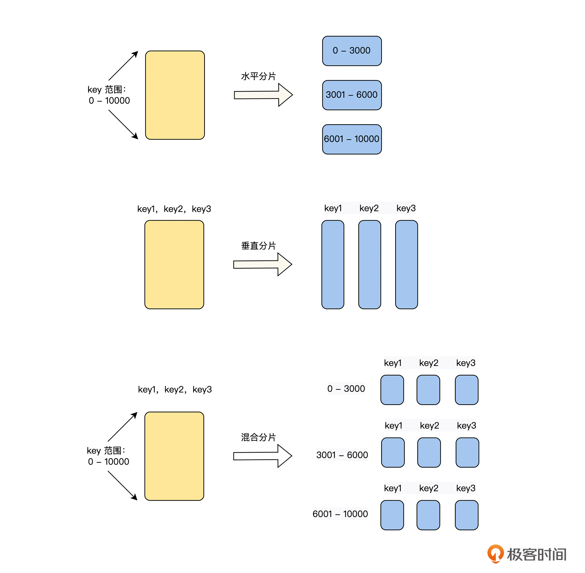
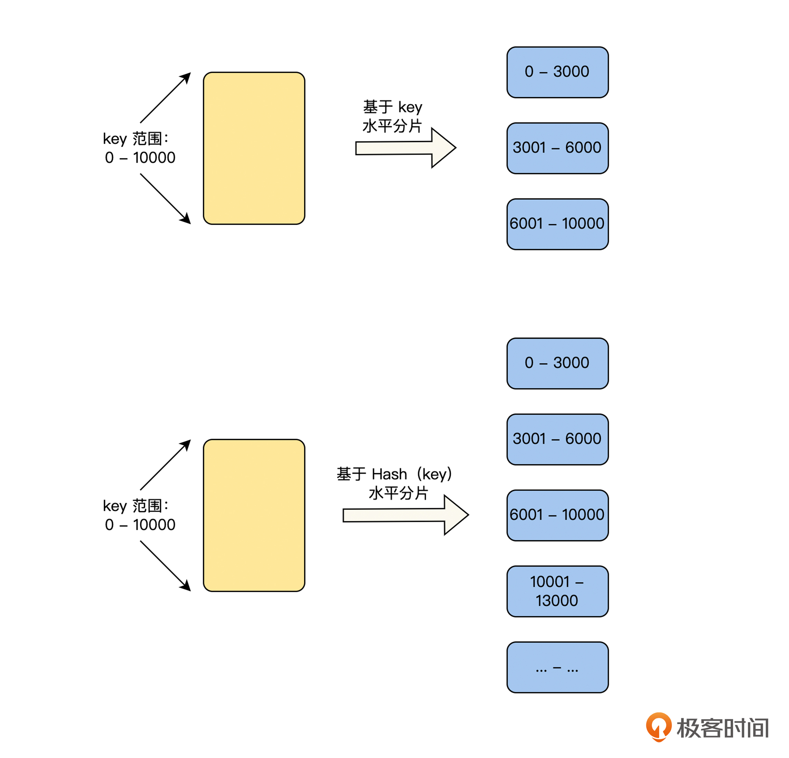
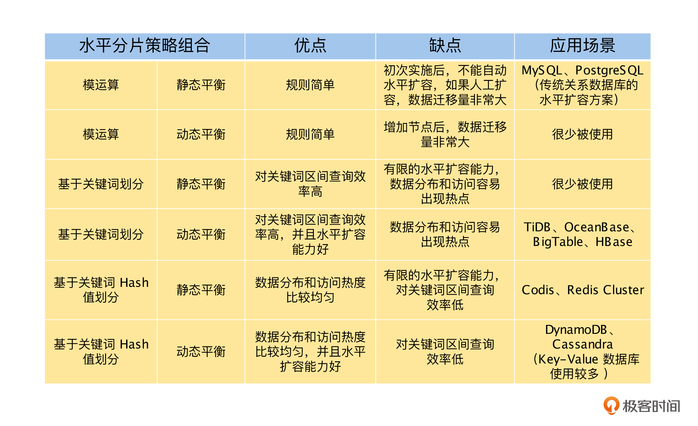

- 00 开篇词 掌握好学习路径，分布式系统原来如此简单.md.html
- 01 导读：以前因后果为脉络，串起网状知识体系.md.html
- 02 新的挑战：分布式系统是银弹吗？我看未必！.md.html
- 03 CAP 理论：分布式场景下我们真的只能三选二吗？.md.html
- 04 注册发现： AP 系统和 CP 系统哪个更合适？.md.html
- 05 负载均衡：从状态的角度重新思考负载均衡.md.html
- 06 配置中心：如何确保配置的强一致性呢？.md.html
- 07 分布式锁：所有的分布式锁都是错误的？.md.html
- 08 重试幂等：让程序 Exactly-once 很难吗？.md.html
- 09 雪崩（一）：熔断，让故障自适应地恢复.md.html
- 10 雪崩（二）：限流，抛弃超过设计容量的请求.md.html
- 11 雪崩（三）：降级，无奈的丢车保帅之举.md.html
- 12 雪崩（四）：扩容，没有用钱解决不了的问题.md.html
- 13 可观测性（一）：如何监控一个复杂的分布式系统？.md.html
- 14 可观测性（二）：如何设计一个高效的告警系统？.md.html
- 15 故障（一）：预案管理竟然能让被动故障自动恢复？.md.html
- 16 故障（二）：变更管理，解决主动故障的高效思维方式.md.html
- 17 分片（一）：如何选择最适合的水平分片方式？.md.html
- 18 分片（二）：垂直分片和混合分片的 trade-off.md.html
- 19 复制（一）：主从复制从副本的数据可以读吗？.md.html
- 20 复制（二）：多主复制的多主副本同时修改了怎么办？.md.html
- 21 复制（三）：最早的数据复制方式竟然是无主复制？.md.html
- 22 事务（一）：一致性，事务的集大成者.md.html
- 23 事务（二）：原子性，对应用层提供的完美抽象.md.html
- 24 事务（三）：隔离性，正确与性能之间权衡的艺术.md.html
- 25 事务（四）：持久性，吃一碗粉就付一碗粉的钱.md.html
- 26 一致性与共识（一）：数据一致性都有哪些级别？.md.html
- 27 一致性与共识（二）：它们是鸡生蛋还是蛋生鸡？.md.html
- 28 一致性与共识（三）：共识与事务之间道不明的关系.md.html
- 29 分布式计算技术的发展史：从单进程服务到 Service Mesh.md.html
- 30 分布式存储技术的发展史：从 ACID 到 NewSQL.md.html
- 春节加餐 技术债如房贷，是否借贷怎样取舍？.md.html
- 春节加餐 深入聊一聊计算机系统的时间.md.html
- 春节加餐 系统性思维，高效学习和工作的利器.md.html
- 结束语 在分布式技术的大潮流中自由冲浪吧！.md.html
- 捐赠
17 分片（一）：如何选择最适合的水平分片方式？
你好，我是陈现麟。
结束了“分布式计算篇”的系列学习，我们掌握了如何解决分布式系统中，无状态节点或服务之间内部的协调问题，利用这些知识和技术原理，你就可以轻松地构建、运维一个大规模无状态的分布式系统了，恭喜你，取得了一个值得庆祝的学习成果。
接下来我们乘胜追击，继续了解有状态分布式系统的相关知识和技术原理。在“分布式存储篇”，我们先解决单机存储和性能瓶颈的“分片”，再解决数据高可用的“复制”，然后讨论如何在已经“分片”和“复制”的数据集上实现 ACID 事务，最后从实践回归到理论，讨论分布式系统最核心、最重要的两个问题：一致性和共识，进一步提高你对分布式技术的理解和认识。
从这节课开始，我们将用两节课的时间来讨论，如何通过“分片”技术，突破单机存储和性能瓶颈，让分布式系统的计算和存储能力可以线性扩展。本节课，我们先梳理常用的分片策略，然后讨论水平分片的算法，并对其优缺点进行比较，最后从理论到实践，分析这些分片策略在实际工作中的应用场景。
分片策略讨论与梳理
在 2000 年左右，由于互联网的快速发展，用户数据爆炸性增长，如何存储和管理这些海量的用户数据成为了一道难题，当时摆在工程师面前主要有两条道路。
第一条是垂直扩容，即 PC 机扛不住换小型机，小型机扛不住换大型机，大型机扛不住换超级计算机，通过不断提高机器的配置来应对数据的增长。但是，这条道路会受到材料的物理极限、制造的工艺水平和使用成本的限制，不是一条可持续的道路。
另一条是水平扩容，即通过将数据进行分片，分散到不同的 PC 机上，每一个 PC 节点负责一部分数据的存储和计算，来应对数据和成本的增长。这一条道路是由 Google 在 2000 年代的三篇论文 GFS 、MapReduce 和 BigTable 开启的，并且成为了解决数据激增问题的事实标准。
那么对数据进行分片的策略，主要有三种：水平分片、垂直分片和混合分片，具体如下图所示。

我们从图中可以看到，水平分片和垂直分片是通过数据切分的操作方向来区分的，而混合分片是它们的组合体。为了帮助你更好地理解，本节课我们将详细讨论水平分片的知识、原理和应用，下一节课我们再讨论垂直分片和混合分片的内容。
水平分片策略介绍
结合水平分片的原理，你是不是也联想到了负载均衡，其实我们在第 5 讲负载均衡中也讨论过这个问题。对于有状态服务，水平分片和负载均衡是解决单机存储与性能瓶颈问题中，相辅相成的两件事情，从流量角度来看，是负载均衡，从数据存储角度来看，是水平分片。
水平分片算法有两个最关键的因素，一是，如何对数据进行划分，即数据划分，二是，分片是否支持动态分裂与合并，即数据平衡。所以接下来，我们将从这两个维度来讨论水平分片策略。
数据划分
数据划分要解决的问题是，将整个数据空间划分为多个分片空间，它主要有两种方式，基于模运算划分和基于范围划分。基于模运算的划分，在“负载均衡”篇中 Hash 负载均衡策略的部分充分介绍过了，这里不再重复。下面我们重点介绍基于范围的划分，如下图所示，它分为基于关键词划分和基于关键词的 Hash 值划分两种方式。

这两种划分方式都是给每一个分片，分配一个确定的数据范围，在这个数据范围内的所有数据，都属于这个分片。基于关键词划分和基于关键词的 Hash 值划分，二者唯一的区别在于，前者是直接利用关键词进行划分，而后者是利用关键词的 Hash 值进行划分。虽然只有这一个区别，但是却会深刻地影响数据的分布规律，所以我们接下来将重点讨论。
基于关键词划分的好处是，分片后数据的分布依然保留了关键词的顺序，我们可以方便地进行区间查询。假如我们在设计一个中国的公民数据库，将地址信息作为分片的关键词进行划分。如果我们需要查询“北京市海淀区”的所有公民，将查询区间设置为 [北京市海淀区 , 北京市海淀区] 即可，因为所有“北京市海淀区”的公民信息是连续存储在一起的。
但是基于关键词划分也会带来问题，即数据分布不均匀和访问的热度不均匀。比如在上文公民数据库的例子中，如果我们按省级行政单位进行划分，每一个省一个分片的时候，你会发现存储西藏数据的分片只有 300 多万条数据，而广东分片则有 1 亿 2000 多万条数据，这就会导致数据分布不均匀。
而数据分布不均匀也会导致访问的热度不均匀，比如，在对数据的访问频率相差不大的情况下，访问广东分片的热度要远远高于西藏分片的热度。并且，如果基于自增 ID 或者时间等关键词对数据进行分片的时候，即使数据是均匀分布的，对于一般的业务场景来说，往往新产生数据的访问热度，也是远远大于历史数据的，这也会导致访问的热度不均匀。
为了解决基于关键词划分带来的问题，我们可以对它的分布规律再进行一些调整。比如，可以对广东分片的数据进一步分片，分为“广东广州”、“广东中山”等多个分片，西藏分片可以与周边的分片合并为一个分片。而对于基于自增 ID 或者时间戳等原因，导致的访问冷热不均匀的关键词，则避免作为数据划分的关键词。
到这里，你会发现基于关键词划分，很明显会使数据分布和关键词自身的分布保持一致。在我们不了解数据分布的情况下，选择哪一个字段作为关键词是一个难题，有没有一种好方法来解决呢？
其实基于关键词的 Hash 值划分就可以解决这些问题，它通过对关键词进行 Hash 运算，然后基于计算后的 Hash 值范围对数据进行划分，一个好的 Hash 算法可以处理数据倾斜并让它均匀分布。这里我们可以理解为通过 Hash 运算，去除了关键词数据分布的业务属性，从而解决了数据分布和访问的热度不均匀的问题。
但是这里依旧没有银弹，基于关键词的 Hash 值划分，带来了数据分布和访问热度更均匀的优点，但同时，它也失去了基于关键词的顺序性，不能方便地通过关键词进行区间查询了。并且，在极端情况下，如果一个关键词的访问热度非常大，那么基于关键词的 Hash 值划分也完全不起作用了。
这里要特别说明一点，我们可以将一致性 Hash 算法理解为基于关键词的 Hash 值划分的一种实现。
数据平衡
根据数据分片是否支持动态的分裂与合并，我们可以将水平分片的数据平衡方式分为静态分片和动态分片。其中静态分片是指在系统设计之初，数据分片的数目和区间就预估好了，数据划分后不能再变化，而动态分片则可以在运行时，根据分片的负载和容量做调整。
对于静态分片，由于分片区间在运行时不能再调整，所以数据划分时一定要谨慎考虑。如果我们对数据的分布有足够的了解，并且数据的分布是比较稳定的，就可以采用基于关键词的方式，通过选择合适的关键词对数据进行划分。例如上文中提到的中国公民数据库的例子中，对于中国各省市的人口分布，因为我们有统计数据支撑，并且人口分布的数据非常稳定，所以就可以基于地址信息，并且结合数据的分布进行划分了。
在我们对数据的分布不了解，或者数据的分布不稳定的情况下，如果要采用静态分片的话，比较稳妥的方式是，采用基于关键词的 Hash 值的方式对数据进行划分，通过 Hash 算法解决数据分布和访问的热度不均匀的问题。
而对于动态分片，因为在运行时，分片区间是可以进行分裂和合并的，所以我们不用担心不了解数据分布，而导致分片区间划分不合理的情况，也不用担心在分片区间划分后，数据的分布发生变化，使分片区间不合适的问题。总而言之，动态分片与基于关键词的划分，往往是一个比较好的组合方式，它避免了基于关键词划分的问题，还保留了数据基于关键词有序的优点。
但是，在基于关键词的划分中，基于自增 ID 或者时间戳等原因，导致的访问冷热不均匀的问题，即使是在动态分片中也不能很好地解决，因为数据的热点往往集中在最新的一个分片区间上。而基于关键词的 Hash 值划分的方式，则可以很方便地将最新的热点数据分布到多个分片上，很好地解决这个问题。
另外，动态分片存在冷启动的问题。当一个基于动态分片的存储系统启动时，通常是从一个分片开始，当数据量不断增长后，再动态进行分裂。在第一次进行分裂前，所有的读写请求都由第一个分片来进行处理，而其他的节点则都属于空闲状态。关于这个问题，一个比较好的解决方式是，动态分片在冷启动时，预分裂为多个分片来缓解。
这里还要特别强调一点，像 Codis、Redis Cluster 这样，预先分配固定数据量 slot ，slot 不能合并和分裂，但是可以通过将 slot 迁移到新增的节点上，进行水平扩容。比如预先分配 1024 个 slot，在 3 副本的情况下，刚开始运行的时候，可能是 3 个节点，每个节点上分布全部的 1024 个 slot 。在数据量增大的情况下，可以增加新的节点，将一部分 slot 迁移到新的节点上，实现水平扩展。
在课程中，由于预先分配 slot 后，就不能再进行合并和分裂了，所以我们将预先分配固定数据量 slot 归类为静态平衡方案。它能提供有限的水平扩容能力，最大程度是一个节点运行一个 slot ，但是当一个 slot 出现非常极端的数据热度和访问热度时，不能再进行分裂和水平扩容。
水平分片策略分析
了解了水平分片的两个维度，数据划分策略和数据平衡策略后，我们将常见的数据划分策略和动态、静态的数据平衡策略交叉组合，一一来讨论它们的优缺点和应用场景，具体如下表。

总结
在这节课中，我们先讨论了数据分片的原因，了解了数据分片策略有三个类型，水平分片、垂直分片和混合分片，这样你就对整个数据分片有了一个全局的了解。
接着，我们介绍了水平分片策略的两个关键维度：数据划分和数据平衡，通过对这两个维度的讨论和分析，你可以基于业务特点，清晰地选择适合你的水平分片策略。
最后，我们对水平分片策略的所有算法和应用场景进行了全面的总结和对比，你可以进一步地理解水平分片策略了。同时，它也是一个非常有价值的结论，一个非常方便的知识库，在有需要的时候，你可以直接查看。
思考题
在极端情况下，如果一个关键词的访问热度非常大，我们有什么办法对这个关键词进行负载均衡呢？
欢迎你在留言区发表你的看法。如果这节课对你有帮助，也推荐你分享给更多的同事、朋友。
© 2019 - 2023 Liangliang Lee. Powered by gin and hexo-theme-book.